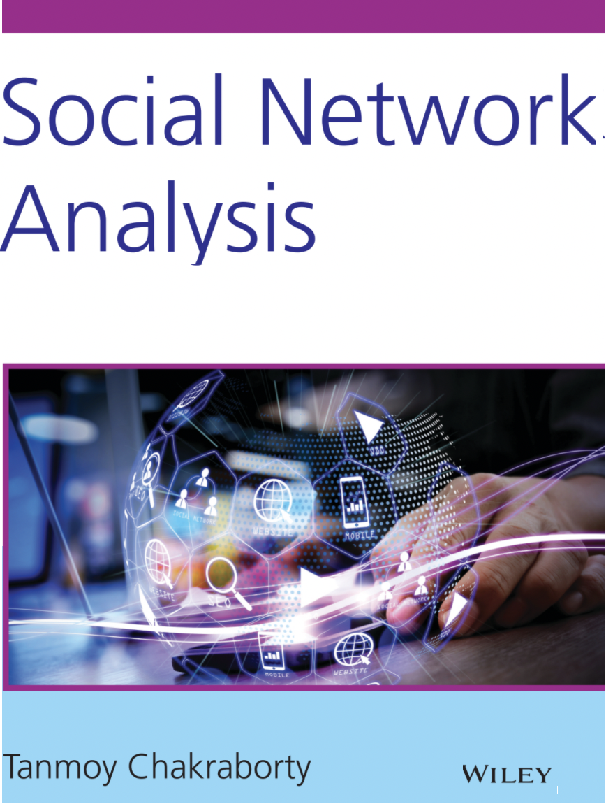
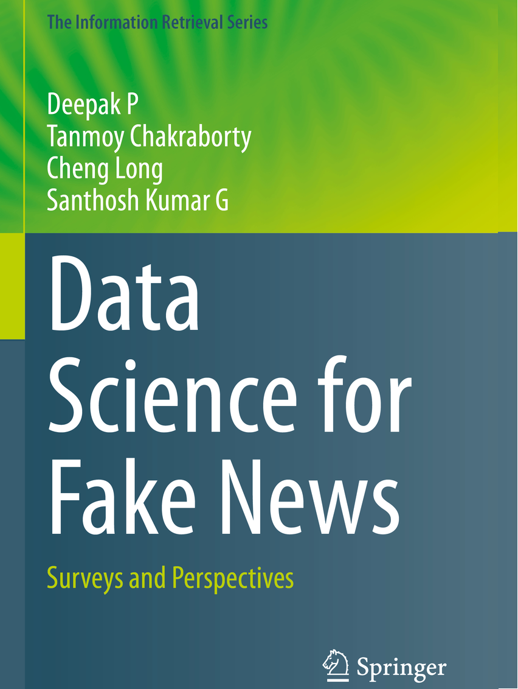
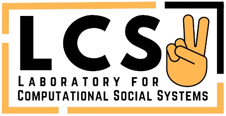

About
Awards
Publications
Students
Activities
Talks
Teaching
Media
Contact
 

Awards
- Dec, 2023: Best Reviewer Award in EMNLP 2023 for the Interpretability, Interactivity and Analysis of Models for NLP track
- Sep, 2023: Adobe Faculty Award, 2023
- Aug, 2023: AI and Social Good IJCAI'23 Award, 2023
- Aug, 2023: JP Morgan Faculty Award, 2023
- July, 2023: ACL Outstanding paper award, 2023
- April, 2023: ACM Distinguished Speaker, 2023-25
- Feb, 2023: IEI Young Engineers Award for the year 2021-22
- Oct, 2022: Indo-German Paired Early Career Fellowship in Applied Research (PECFAR)
- May, 2022: PAKDD'22 Early Career Research Award
- Dec, 2021: Google exploreCS award (jointly with two other colleagues)
- Sep, 2021: Faculty Excellence Award from IIITD
- Aug, 2021: Google TensorFlow Faculty Award
- Aug, 2021: Received Unrestricted Faculty Grant/Gift from LinkedIn
- Oct, 2020: Received SIG-Social Media Registration Support Award for ASIST Social Informatics Symposium
- Sep, 2020: Received Teaching Excellence Award for the NLP (Monsoon 2019) course
- Aug, 2020: Received a grant from Facebook to access CrowdTangle platform
- Nov, 2019: Outstanding reviewer recognition in EMNLP-IJCNLP, 2019 (link)
- Nov, 2019: ASEM-DUO India Faculty Fellowship
- Sep, 2019: Received IBM Faculty Award
- Sep, 2019: Received Teaching Excellence Award for both NLP (Monsoon 2018) and IR (Winter 2019) courses
- June, 2019: Best Student Paper Award in JCDL 2019
- Sep, 2018: Received Google India Faculty Award
- Sep, 2018: Received Teaching Excellence Award in both NLP (Monsoon 2017) and IR (Winter 2018) courses
- Aug, 2018: Received Faculty Award from Hike Messenger, India
- July, 2018: Received Faculty Award from Egregore Lab, India
- May, 2018: Received Early Career Research Award (ECR) from SERB, DST, Govt. of India
- April, 2018: Received best reviewer award (out of 1232 reviewers) in WWW'18
- Mar, 2018: Received DAAD Faculty Fellowship
- July, 2017: Received Ramanujan Fellowship (link)
- July, 2017: My PhD work featured in Computing Reviews' Notable Books and Articles 2017, ACM (link)
- Oct, 2016: Best Poster Runner Up in IBM I-CARE 2016, Bangalore, India.
- Sep, 2016: Received IBM Best PhD Thesis Award
- Sep, 2016: Received INAE PhD Level Innovative Student Projects Award (Equivalent to Best Thesis Award) (Slides)
- Aug, 2016: Received Best Paper Runner up, ASONAM 2016
- Jan, 2016: Received Xerox India Best PhD Dissertation Award
- Aug, 2015: Received Best Demo Award in IBM Day, IIT Kharagpur, India, 2015.
- Jan, 2015: Received first prize in Microsoft Techvista PhD poster competition (a cash award of INR 1.5 lakhs) and a citation.
- Aug, 2014: Received Yahoo award, KDD student fellowship and ACM-India IARCS travel grant for attending SIGKDD 2014.
- Jan, 2014: Best presentation award in Social Networking workshop, COMSNETS 2014.
- July, 2013: Selected for Full International Travel Support by DST, Govt. of India for attending ASONAM and BASNA in Canada, Aug. 25-28 Aug., 2013.
- Mar, 2013: Selected as a funded student for the "Latin American eScience Workshop 2013: Turning Data into Insight". (60 students are selected worldwide)
- Jan, 2013: Honorable mention award in TechVista, Microsoft Research India's annual research symposium, Coimbatore, India, 2013.
- June, 2012: Qualified UGC-NET (National Eligibility Test) Examination in Computer Science & Application.
- July, 2012: Google India PhD Fellowship 2012 for 4 years (4 students are selected in India)
- Nov, 2010: Best paper award in IEEE Cascom Postgraduate Student paper Conference, 27th Nov, 2010, Kolkata.
- May, 2009: Best Student award by TATA CONSULTANCY SERVICES
- May, 2009: College Topper in B.Tech
Email:
tanchak@iitd.ac.in
tanchak@ee.iitd.ac.in
chak.tanmoy.iit@gmail.com*Phone: +91-XXXXX-XXXXX
Address: Room: 3B-7 (Block III 3rd Floor),
© Copyright 2024. All Rights are Reserved.
Dept. of Electrical Engineering
Indian Institute of Technology, Delhi
Hauz Khas, New Delhi, Delhi 110016, India